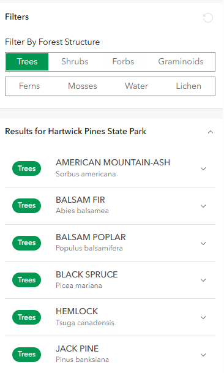
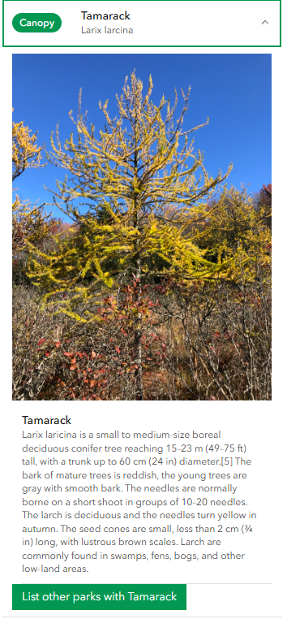

The Interface

A slippy map of Michigan with boundaries of all state parks is shown to the user. Clicking on polygon will populate the side panel with a list of species

Opening each panel will show information about the species and allow the user to search for parks containing that specific species.
